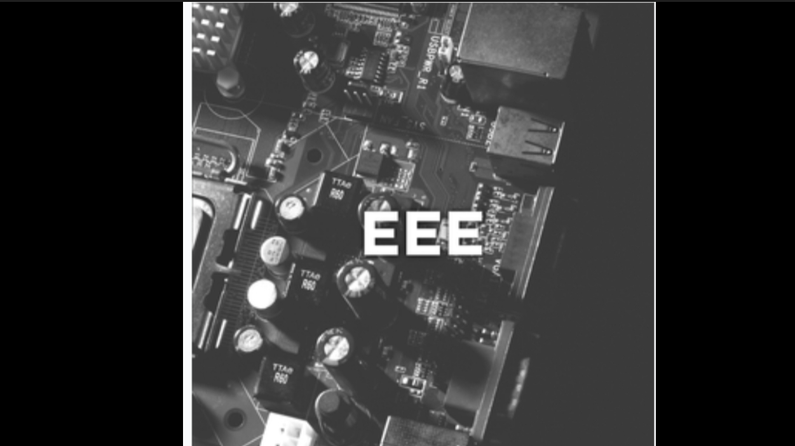

Profile:
-
The department of Electrical & Electronics Engineering was established in the year 1985 and is headed by experienced, dedicated and highly qualified faculty Dr. Mohamed Zahed Ahmed Ansari. The department has well qualified; passionate and dedicated staff, most of who are engaged in path breaking research and development. With a current annual intake of 60 students from all parts of India. The fast changing technological scenario poses to the department a challenge of continuously updating its curriculum and faculty to be able to provide state-of-the-art education to the students. The department offers an inspiring environment for its staff and students to bridge the gap between the industry and academia. Several students have secured university ranks in both UG and PG courses.
-
The state of the art infrastructural facilities have been established at par with the university requirement to cater to the needs of students of the department. The department offers the programmes leading to under-graduate (UG) and post-graduate (PG) courses in Power System Engineering along with M.Sc. Engg., by Research, and Doctoral Program in the diversified field of Electrical & Electronics Engineering. The department was accredited thrice by National Board of Accreditation, New Delhi and in 2016, the department has been accredited for 3 years by National Board Accreditation, New Delhi.
-
The Relay & HV Lab, DC Machines & Synchronous Lab and Transformers & Induction Machines Lab, Electronics and Linear integrated Circuit Laboratory of the department have been modernized by the grants sanctioned from AICTE, New Delhi under Modernization and Removal Obsolescence (MODROBS) Scheme to the tune of Rs. 32.46 Lakhs. Further, Vision Group of Science & Technology (VGST), Government of Karnataka has sanctioned Rs. 20 Lakhs towards the development of Virtual Instrumentation and Power Control Applications Lab.
-
In addition to teaching, the faculties is involved in research and consultancy activities as well and have published over 133 research papers in National and International Journals and Conferences.
Vision:
-
To be Recognized as Center of Excellence in Electrical and Electronics Engineering Education, Research and the Application of Knowledge to Benefit Society Globally.
Mission:
-
To Provide Exemplary Training, High Standards and Quality Education to the Students and mould them in to Knowledgeable and Skilled Electrical and Electronics Engineers.